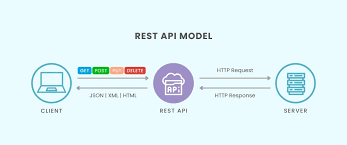

Understanding REST APIs in Django
REST (Representational State Transfer) is an architectural style for building scalable web services. It defines structured endpoints that communicate over HTTP using predictable methods.
In Django, we can implement REST APIs using Django REST Framework, allowing us to define serializers, views, and routers efficiently.
Why REST Matters

REST ensures separation between frontend and backend, allowing applications like React to communicate cleanly with backend systems such as Flask or Django.
This architectural separation makes applications scalable, maintainable, and easier to deploy to cloud environments.